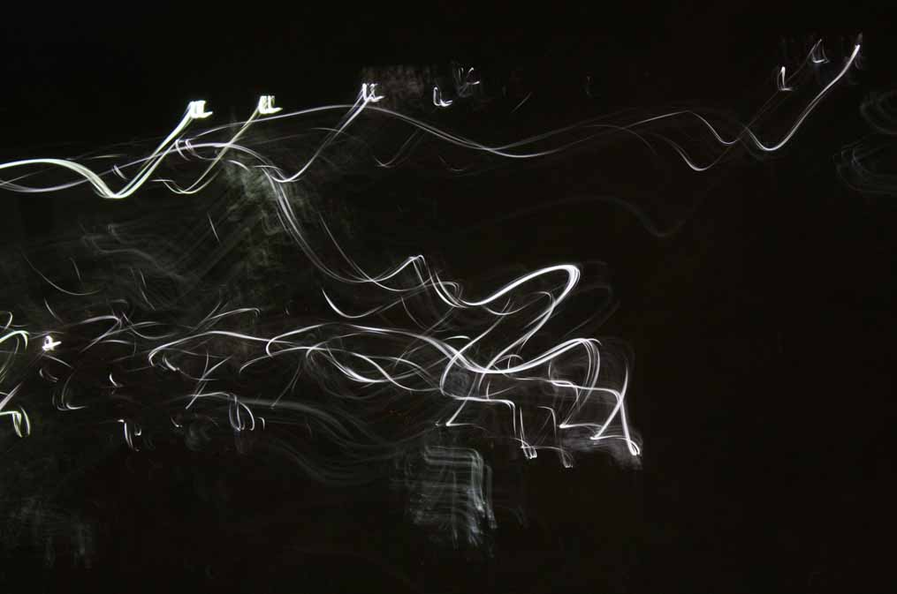
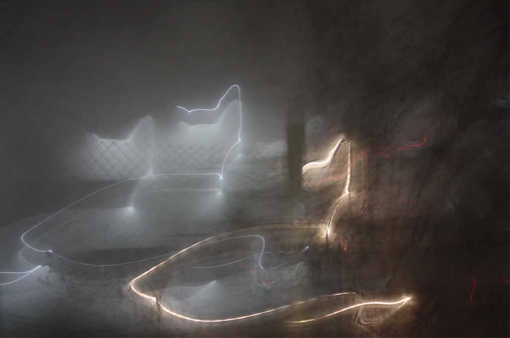

Indistinct Light:
a photographic exploration of how the world changes in darkness.

Adrift
Light trails dancing in the dark.

Blue Lights
Blue with orange light trails

Boundaries
Looking into the beyond past the boundary fence.